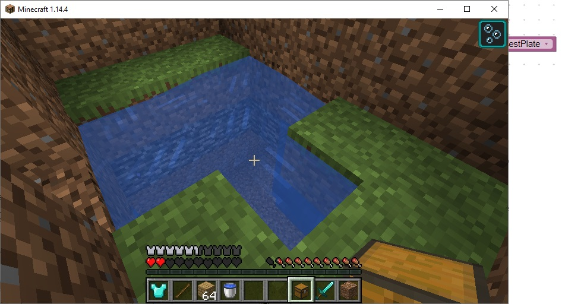
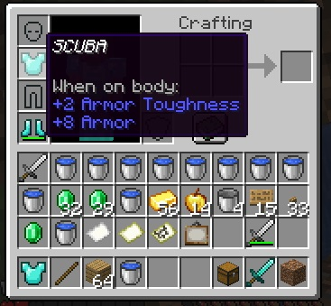
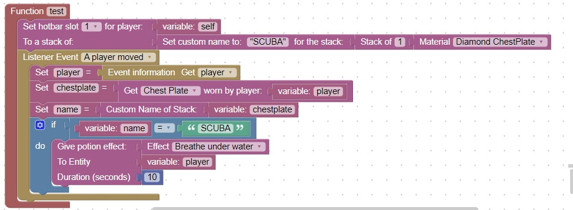

Water Obstacle
Create a room that only has water in it.
This water leads underground to the only exit which happens to be the next room
The water obstacle should be long enough that a player cannot navigate to the next room without underwater breathing

This code will check if the player has a chestplate with the custom name: "SCUBA".

When the player moves and the SCUBA chestplate is being worn, they are given underwater breathing
Add this code to your maze project
